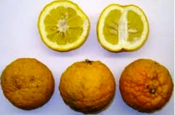
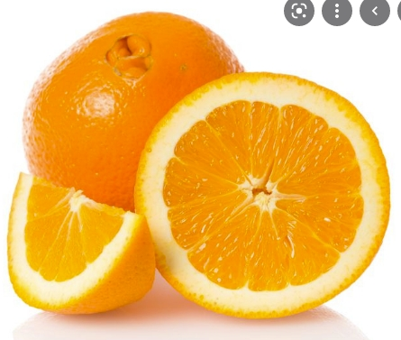
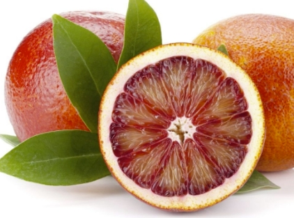

|  | bigaradeLa bigarade est un fruit ressemblant à l’ Orange Douce commune. Il est cependant un peu plus petit et d’un orange un peu plus sombre. En revanche ce qui permet de le distinguer sans faute, c’est bien l’amertume de la bigarade, qui rend ce fruit impropre a une consommation crue. |
|  | NavelLa navel est principalement cultivée pour la consommation humaine pour diverses raisons : leur peau plus épaisse les rend faciles à peler, elles sont moins juteuses et leur amertume — en raison des fortes concentrations de limonine et d'autres limonoïdes — les rend moins adaptées à la production de jus. Leur distribution étendue et leur longue période de récolte ont rendu la navel très populaire. Aux États-Unis, la navel est disponible de novembre à avril, avec un pic d'approvisionnement de janvier à mars |
|  | SanguineL'orange sanguine, ou sanguine, est une variété d'orange douce, fruit de l'oranger (Citrus sinensis), dont la couleur de pulpe va du rouge sang au rouge sombre. Une forte amplitude thermique hivernale induit la production d'anthocyanines dans le fruit. |